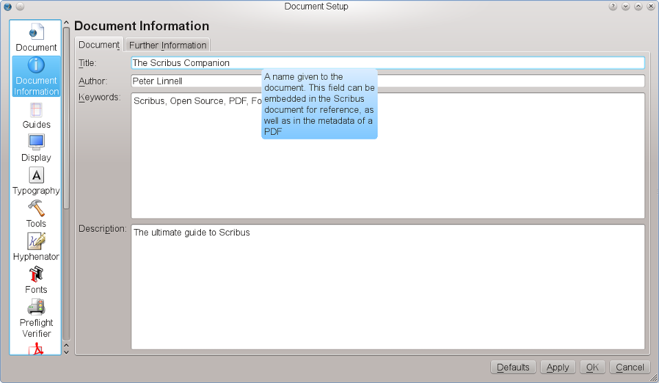
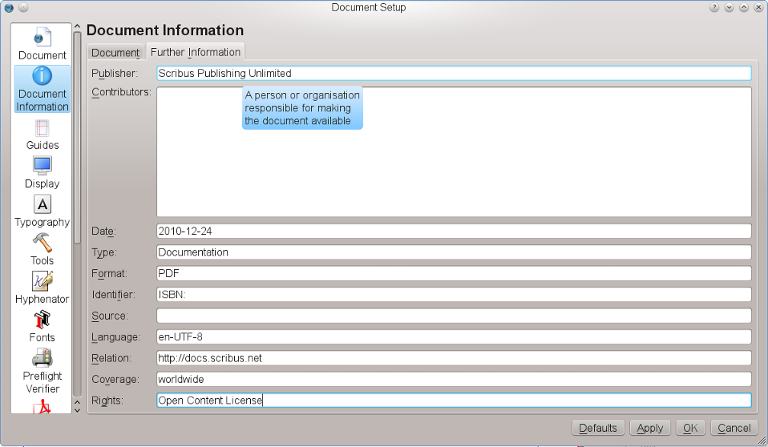

There are a two points to consider in the “Document Information” panel:
In the first tab, “Document”, you can enter PDF metadata. Note that these are also a subset of Dublin Core:
|  |
The second tab is called “Further Information” and contains fields as defined by the Dublin Core specifications:
|  |
Publisher |
The person or organization responsible for making the document available or for putting into print. |
Contributors |
A person or organization responsible for making contributions to the content of the document. |
Date |
A date associated with an event in the life cycle of the document, in YYYY-MM-DD format, as per ISO 8601. |
Type |
The nature or genre of the content of the document, eg. categories, functions, etc. |
Format |
The physical or digital manifestation of the document. Media type and dimensions would be worth noting. RFC2045,RFC2046 for MIME types are also useful here. |
Identifier |
An unambiguous reference to the document within a given context such as ISBN or URI. |
Source |
A reference to a document from which the present document is derived, eg. ISDN or URI. |
Language |
The language in which the content of the document is written, usually a ISO-639 language code. Optionally suffixed with a hyphen and an ISO-3166 country code, eg. en-GB, fr-CH. |
Relation |
A reference to a related document, possibly using a formal identifier such as a ISBN or URI. |
Coverage |
The extent or scope of the content of the document, possibly including location, time and jurisdiction ranges. |
Rights |
Information about rights held in and over the document, eg. copyright, patent or trademark. |